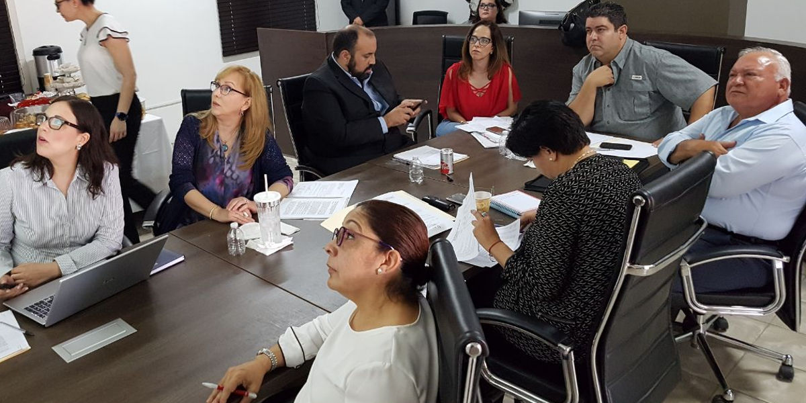

Aprueba Órgano de Gobierno informe de avance de gestión financiera correspondiente al primer trimestre de 2018, de la Secretaría Ejecutiva del Sistema Estatal Anticorrupción
Secretaría Ejecutiva del Sistema Estatal Anticorrupción. Consejo de Participación Ciudadana del SEA.
Saltillo, Coahuila.- Durante la Segunda Sesión Ordinaria del Órgano de Gobierno del Sistema Estatal Anticorrupción de Coahuila, sus integrantes aprobaron el Informe de Avance de Gestión Financiera correspondiente al Primer Trimestre del año 2018, de la Secretaría Ejecutiva del SEA, que será enviado al Congreso del Estado.
En la sesión que se llevó a cabo el martes 24 de abril de 2018, en la sede del Tribunal de Justicia Administrativa en Saltillo, estuvieron presentes la magistrada Sandra Rodríguez Wong, presidenta del Tribunal de Justicia Administrativa; la magistrada Miriam Cárdenas Cantú, presidenta del Consejo de la Judicatura del Tribunal Superior de Justicia; Teresa Guajardo Berlanga, secretaria de Fiscalización y Rendición de Cuentas del Gobierno de Coahuila.
Así mismo, asistieron Armando Plata Sandoval, auditor Superior del Estado; Jesús Flores Mier, titular de la Fiscalía Especializada en Delitos por Hechos de Corrupción, así como representante del ICAI; Marcela Castañeda Agüero, secretaria técnica de la Secretaría Ejecutiva del SEA y Manuel Gil Navarro, presidente del Consejo de Participación Ciudadana.
Marcela Castañeda, secretaria técnica de la Secretaría Ejecutiva, en su intervención presentó un Informe de Avance del Programa de Trabajo para este 2018, en el que se analizaron los resultados de los primeros diagnósticos y programas en los que se trabaja y los acuerdos tomados en las sesiones de la Comisión Ejecutiva del Consejo de Participación Ciudadana del SEA.
También se plantearon avances del Manual de Identidad del Sistema Estatal Anticorrupción que permitirá tener una imagen distintiva tanto del SEA como de la Secretaría Ejecutiva.

24 abril 2018